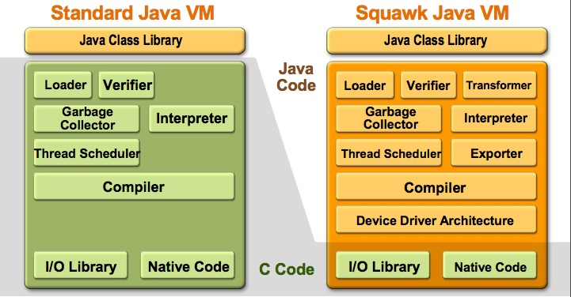
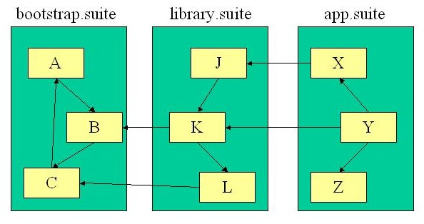
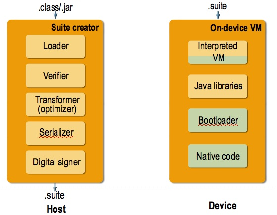

Goals of Squawk
A major goal of the Squawk project is to write as much of the
virtual machine as possible in Java, for portability, ease of
debugging, and maintainability. Squawk aims at
a small footprint. Squawk is CLDC 1.1 and IMP 1.1 compliant.
Squawk is meant to be used in small, resource constrained devices. more...
The main goal however of Squawk, is to enable Java technology in the micro-embedded space. The majority of development in the micro-embedded space today is done using low level languages and custom sets of tools and Operating Systems. We believe that by bringing Java technology to the micro-embedded space we can lower the cost of development and enable new types of applications that would otherwise not be built. Java technology brings with it a signifcant amount of standard development tools and libraries built a large Java developer community.
Powering all this functionality is a core set of Java ME technologies known
as CLDC (the Java VM) and IMP (the information module profile). IMP
is a subset of MIDP (the mobile information device profile) that removes all
parts of the API relating to the requirement of a physical display device.
CLDC and MIDP are the most widely adopted Java ME application platforms
used in mobile phones today. This allows developers to have access to a font
of resources to aid in their development of applications.
To see papers published go to the Sun Microsystems Laboratories Project Squawk page.
The architecture of the Squawk VM was inspired in part by the Squeak and Klein VM
architectures. In particular, it is (mostly) implemented in the language that
it executes (Java).

Features of the Squawk architecture include:
-
A compact bytecode instruction set
- Smaller than standard bytecode (35% - 45% size of equivalent J2ME class files)
- Fixed up/pre linked
- Immutable ==> execute in place
- Simplified garbage collection:
- local variables are partitioned into pointers and primitives ==> only one pointer map per method
- there is nothing on evaluation stack at operations that may result in an invocation ==> no need to statically interpret methods during GC
-
Suites
A suite is a collection of classes. Each class in a suite only refers to other
classes in the suite or to a class in a parent suite. That is, a chain of suites
is a transitive closure of classes as shown below:

The representation of classes in a suite is very compact
as they are all prelinked to each other. On average, suites are
one third of the size of class files.
Once a suite is closed (i.e. cannot
have any more classes loaded into it), it is immutable.
An immutable suite can be saved to and loaded from a file. This results in a
significantly reduced start up time when running an application from a suite
(as opposed to a dynamically loaded set of classes).
-
Split VM
Squawk supports using a split VM architecture in order to save memory
on-device.

The host machine verifies, optimizes, and transforms the the application classes into Squawk's internal object
representation, which is then saved into a suite.
Suites are then loaded into the embedded device and are interpreted by
the VM on-device. This allows for a smaller VM to be stored in the
embedded device, as well as faster start-up time for the embedded
application.
-
Isolates
An isolate
is a mechanism by which an application is represented as an object.
In Squawk, one or more applications can run in the single JVM.
Conceptually, each application is completely isolated from all other applications. Given the
immutability of suites, the isolate implementation in Squawk shares common suites between
applications. This can significantly reduce the memory footprint of each application, which
is particularly important in the embedded device space.
In addition to the standard semantics of isolates, the Squawk implementation has
one extra feature: isolate migration. That is, an isolate running on one Squawk VM instance
can be paused, serialized to a file or over a network connection and restarted in another
Squawk VM instance. This feature is a direct result of certain architectural choices made
in Squawk such as using a green threaded model, representing all VM structures (including
thread stacks) as objects and not implementing a general native code interface such as the JNI.
The isolate migration mechanism also works between two VM instances running on platforms that
have a different machine word endianess. A compelling use of this mechanism is for deploying
a configured running application to a device running a Squawk VM that does not have the
resources required for standard class file loading and Java object serialization.
-
VM Components
The VM components include:
- The class loader/bytecode translator
- The ahead-of-time bytecode optimizer
- The threading system (green threads)
- The garbage collectors (selected at build time):
- Simple two space Cheney collector
- Mark/compact "Lisp2" collector
- Generational mark/compact "Lisp2" collector
Squawk's design includes a compiler that can be used to:
- compile the core VM components ahead-of-time
- compile an interpreter written in Java ahead-of-time
- compile other Java components ahead-of-time
- compile bytecodes just-in-time (JIT compilation)
The general Squawk compiler is not complete, but limited ahead-of-time
compilation of Java components such as the garbage collector is
supported.
rough plans
- Implement Real-Time support in Squawk, starting with a sub-set
of the RTSJ (Real-Time Specification for Java).
- Figure out and implement technology transfer plan, including
Open Source and business licensing.
- Execution Engine enhancements, which may include interpreter rewrite,
AOT-compilation, and byte-code optimizations (inlining, etc).
- Continue SPOT support, fixing critical bugs
- New SPOT-requested features.
| |
|
 Download
Download Contribute
Contribute Browse
Browse